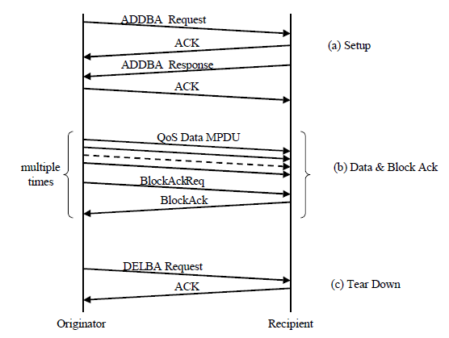
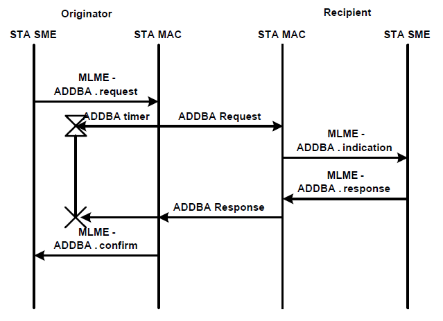
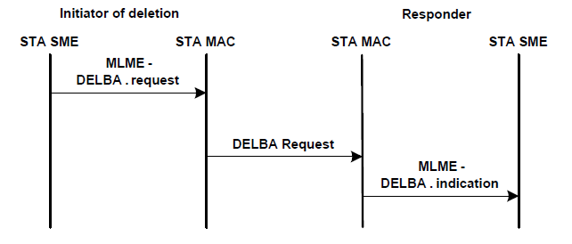
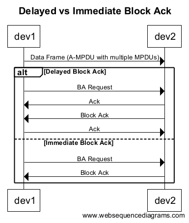
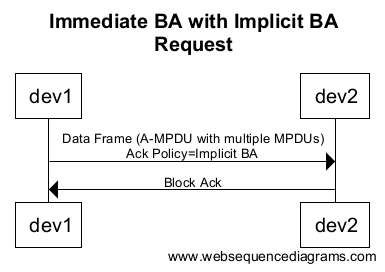
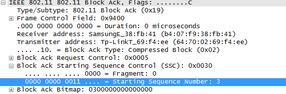
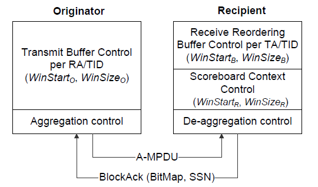
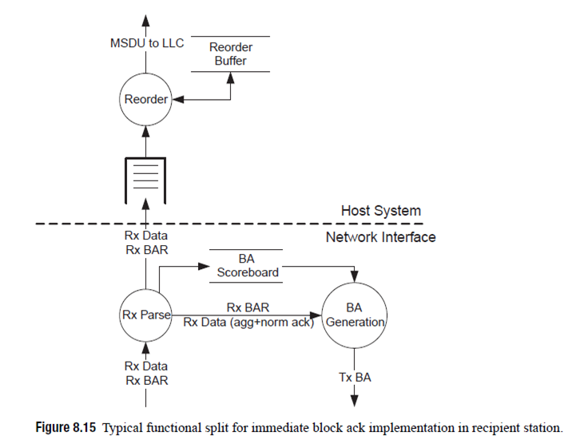

Bluetooth Management in Florida Stack
Table of Contents
1 概述
802.11标准中要求每个单播的帧都必须得到正面确认(Positive
Acknowledgement)。 在802.11e中引入了 Block Acknowlegement 的概念：
单个确认帧可以对多个数据帧进行确认。 Block Acknowlegement 和
A-MPDU 一起用在802.11n中，极大改善了应用吞吐量。
2 BA Inside
2.1 BA Procedure

Figure 1: BA Session Procedure
2.2 BA setup & tear down

Figure 2: Block Ack setup

Figure 3: Block Ack deletion
2.3 BA的类型
BA分为 Immediate BA 和 Delayed BA , 区别如下图所示：

ADDBA会指定使用何种类型的BA。
2.4 隐式BA请求
有时，在抓取的802.11n的sniffer log中，只看到BA事件，没有看到BAR， 这是因为BAR是隐式的，即"Immediate BA with implicit BA request"。

2.5 BA Bitmap
BA Bitmap 和起始序列号显示了正在被确认的数据包。每个比特位确认一 个包，且该包的序列号等于起始序列号加上比特号，如下图显示的BA是确 认package 3, 4。

2.6 Compressed BA
BA最初是定义在802.11e中，以允许确认每个的MSDU，bitmap有128字节长。
802.11n只允许确认每个MPDU，且bitmap是8个字节长。8字节长的Bitmap称为
Compressed BA 。
2.7 BAR(BA Request)
一个BAR也用来改变起始序列号。有一种应用场景是： 当一个发送方一开 始没有使用聚合发送数据帧（此时会通过正常的Ack确认帧）， 之后，它 想发送一些聚合的数据，则发送方可以通过发送一个BAR去更新接收方的起 始序列号。 接收方会回应一个Bitmpa全0的BA给发送方。
2.8 BAR Ack Policy
require Immediate Acknowledgement or not.
3 深入了解BA
所有操作是基于Sequence Number执行的， Sequence Number的范围是（0, 4095）. Sequence Number的空间被分成两个部分，一部分是“旧”，一部分 是“新”， 一部分通过二分法来划出他们之间的界限。
3.1 Receive buffer operation
针对每次Block Acknowledge, 接收方都会维护一个MAC变量：
NextExpectedSequenceNumber 。
初始值为0.
如果收到的帧的Sequence Number小于 NextExpectedSequenceNumber ，则
会丢弃该帧, 否则都会缓存该帧。
当收到 BlockAckReq 帧时，它会冲刷当前收到的MSDU和 A-MSDU . 会执
行如下一些过程：
- 对于那些已经接收到的帧，如果帧的序号小于
BlockAckReq帧中的起始 序号，则会被传递到下一个MAC过程中去处理(也即传递给上层处理)。 - 同时，从起始序号开始的， 将对应的帧也传递到下一个MAC过程中去处理， 直至出现的序号没有对应收到的帧为止。
- 上述两步过后，如果没有帧需要传递给下一个MAC过程中去处理，且
BlockAckReq帧中的起始序号要比NextExpectedSequenceNumber值 要大，则将NextExpectedSequenceNumber值更新为此值。 - 如果接收到了一个MPDU，但是接收的Buffer已经满了，则序号最早的帧将 会被传递到下一个MAC过程去处理。
- 如果接收到了一个MPDU，但是接收的Buffer没有满，且接收到的帧中的
序号最小值与
NextExpectedSequenceNumber值相同，则该MPDU将会直 接被传递给下一个MAC过程。 - 每次接收者传送一个MSDU或
A-MSDU给下一个MAC过程去处理，NextExpectedSequenceNumber的值会更新为该帧的序号加1. - 接收者应该以递增的顺序将接收到的帧传送给下一个MAC过程。
3.2 HT-immediate Block Ack extensions
该扩展简化了immediate Block Ack来传输A-MPDU, 降低了接收者的资源需 求。
An HT STA shall support HT-immediate Block Ack in the role of recipient.
3.2.1 HT-immediate Block Ack architecture
#+CAPTION HT-immediate Block Ack architecture 
originator包含一个传输Buffer控制，它使用一个传输窗口， WinStarto/代表传输窗口的起始帧序号， /WinSizeo 代表Block Ack协 商中确定的Buffer数目。
Aggregation control 创建 A-MPDU , 它可能会调整传输的QoS数据帧的
Ack Policy域的值。
每个recipient包含一个 receive reordering buffer control ， 它的 主要目的是确保接收到的MSDU或A-MSDU按帧序号顺序传递给上层。 它也可以用于侦测重复帧，并丢弃。
For each HT-immediate Block Ack agreement, the recipient chooses either full-state or partial-state operation (this choice is known only to the recipient). A STA may simultaneously use full-state operation for some agreements and partial-state operation for other agreements. Under full-state operation, status is maintained in statically assigned memory. Under partial-state operation, status is maintained in a cache memory;
The scoreboard context control stores an acknowledgment bitmap containing the current reception status of MSDUs or A-MSDUs for HT-immediate Block Ack agreements.
The deaggregation control entity separates frames contained in an A-MPDU.
Each received MPDU is analyzed by the scoreboard context control as well as by the receive reordering buffer control.

- Scoreboard context control during full-state operation
a recipient shall maintain a block acknowledgment record. The record includes:
- bitmap 通过sequence numer索引
- WinStartR 12-bit 无符号整数，代表bitmap中最小序号的位置, 即起始序号.
- WinEndR the highest sequence number in the current transmission window.
- WinSizeR maximum transmission window size, 不超过64。
STA通过如下规则维护block ack record:
- At HT-immediate Block Ack agreement establishment:
- WinStartR = SSN SSN信息来自ADDBA Response帧。
- WinEndR = WinStartR + WinSizeR – 1.
- For each received data MPDU that is related with a specific
full-state operation HT-immediate Block Ack agreement, 将按如
下规则修改相关Bit位，其中 SN 代表接收到的MPDU的Sequence
Number子域的值。
- 如果 WinStartR ≤ SN ≤ WinEndR ， 将bitmap中SN对应的bit位置 为1.
- 如果 WinEndR < SN < WinStartR+211
- 将SN值处于 WinEndR+1 到 SN-1对应的bit位置为0，
- 设置 WinStartR = SN – WinSizeR + 1.
- 设置 WinEndR=SN.
- 将bitmap中SN对应的bit位置为1。
- 如果 WinStartR+211 ≤ SN < WinStartR， 不做任何修改。
- For each received BlockAckReq frame that is related with a
specific full-state operation HTimmediate non-Protected Block
Ack agreement, the block acknowledgment record for that
agreement is modified as follows, where SSN is the value from
the Starting Sequence Number subfield of the received
BlockAckReq frame:
- 如果 WinStartR < SSN ≤ WinEndR
- Set WinStartR = SSN
- 将Sequence Number为 WinEndR + 1 到 WinStartR + WinSizeR – 1所对应的所有bit位设置为0。
- Set WinEndR = WinStartR + WinSizeR – 1.
- 如果WinEndR < SSN < WinStartR+211
- Set WinStartR = SSN.
- Set WinEndR = WinStartR + WinSizeR – 1.
- 将Sequence Number为WinStartR 到WinEndR 对应的bit位设置为0。
- 如果 WinStartR+211 ≤ SSN < WinStartR， 不做任何修改。
- 如果 WinStartR < SSN ≤ WinEndR
- Scoreboard context control during partial-state operation